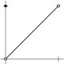

Definition 3.1.1.
Let \(S \subset \R\) be a set. A number \(x \in \R\) is called a cluster point of \(S\) if for every \(\epsilon > 0\text{,}\) the set \((x-\epsilon,x+\epsilon) \cap S
\setminus \{ x \}\) is not empty.

| a) \(\displaystyle \lim_{x\to c} \sqrt{x} \text{,}\) for \(c \geq 0\) | b) \(\displaystyle \lim_{x\to c} x^2+x+1 \text{,}\) for \(c \in \R\) | c) \(\displaystyle \lim_{x\to 0} x^2 \cos (\nicefrac{1}{x})\) | ||
| d) \(\displaystyle \lim_{x\to 0} \sin(\nicefrac{1}{x}) \cos (\nicefrac{1}{x})\) | e) \(\displaystyle \lim_{x\to 0} \sin(x) \cos (\nicefrac{1}{x})\) |